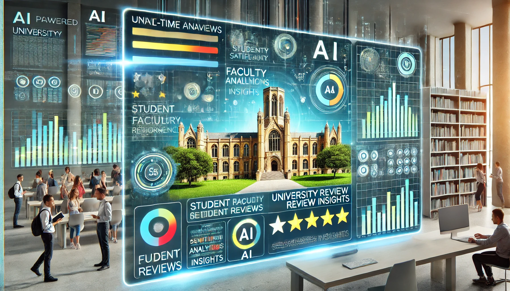
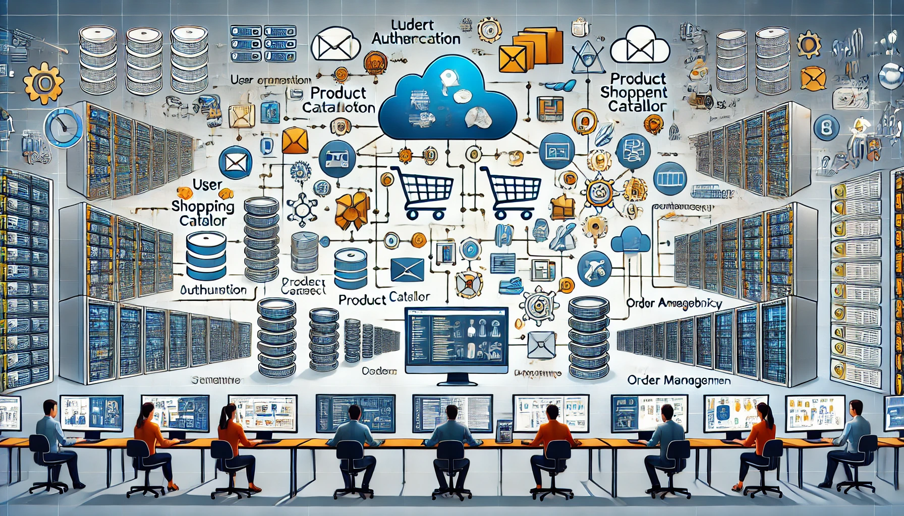

Intelligent Cloud-Based Log Analysis Platform
Mar 2024 - May 2024
Developed a sophisticated platform to parse and analyze AWS CloudTrail logs. This platform leverages machine learning to predict and suggest fixes for common access issues. Implemented advanced analytics using AWS Lambda (Python) for serverless computation, Amazon Comprehend for natural language processing (NLP), and Amazon SageMaker for predictive modeling. The solution resulted in a 40% reduction in troubleshooting time, significantly improving operational efficiency.
Skills: AWS Lambda · Amazon Comprehend · Amazon SageMaker · Python · Machine Learning

AI-Powered University Review Insights System
Aug 2023 - Dec 2023
Built an AI-driven system using AWS to analyze and derive insights from university reviews. The system integrates sentiment analysis and trend prediction, utilizing AWS Lambda (Python) for serverless execution, Amazon Comprehend for NLP, and Amazon Forecast for predictive analytics. This tool provides actionable recommendations, enhancing decision-making for prospective students and university administrators.
Skills: AWS Lambda · Amazon Comprehend · Amazon Forecast · Python · Artificial Intelligence
Underlay, AI for Design Sketching
Jun 2023 - Jul 2023
Developed an AI-based tool named Underlay that assists designers in starting digital sketches by generating geometry based on design requirements. This tool simplifies the sketching process by helping establish correct perspectives, proportions, and lighting. Leveraged technologies such as Google Cloud Platform (GCP), Three.js, CSS, HTML, JavaScript, and Java to create an intuitive and efficient design tool.
View ProjectSkills: Artificial Intelligence (AI) · Google Cloud Platform (GCP) · Three.js · CSS · HTML · JavaScript · Java
Revolve, a Sketch into a Cylindrical Form Generator
Jun 2023 - Jun 2023
Created Revolve, a tool that transforms sketches into cylindrical forms. This tool allows users to quickly explore 3D forms and visualize changes in real-time. The project utilized Three.js for 3D graphics, along with CSS, HTML, JavaScript, and Java to provide a seamless and interactive user experience.
View ProjectSkills: Three.js · CSS · HTML · JavaScript · Java

Scalable Microservices Architecture for E-Commerce
May 2023 - Jul 2023
Designed and implemented a scalable microservices architecture tailored for an e-commerce platform. The architecture breaks down e-commerce functionalities into independent services such as user authentication, product catalog, shopping cart, payment processing, and order management. Each service is designed to be highly scalable and resilient, ensuring seamless performance even under high traffic conditions. The microservices communicate through lightweight protocols, enabling easy updates and maintenance without affecting the entire system.
Skills: Kubernetes · Docker · AWS Fargate · Jenkins · AWS CodePipeline · Java
Sample, Color Palette Generator
May 2023 - Jun 2023
Introducing Sample, a color palette generator. When making color and material decisions, it can be a challenge. Sample simplifies this process by calculating the primary colors that exist within an image, helping designers quickly select and apply cohesive color schemes to their projects.
View ProjectSkills: Figma (Software) · CSS · HTML · JavaScript · Java
High-Performance Trading System
Jan 2023 - Apr 2023
Developed a high-frequency trading system capable of handling large volumes of financial transactions and real-time market data. The system supports high-frequency trading with minimal latency and features advanced algorithms for trade execution, risk management, and market analysis. The user interface provides real-time stock market data, interactive charts, and analytics tools, ensuring security, speed, and accuracy.
Skills: C++ · Boost · ZeroMQ · AWS · AWS CloudWatch
Automated Machine Learning Pipeline for Financial Forecasting
Nov 2022 - Mar 2023
Created an automated machine learning pipeline for financial forecasting, incorporating data ingestion, preprocessing, model training, and prediction stages. Leveraged AWS SageMaker for model training and deployment, built a RESTful API with Flask for model deployment, and utilized AWS Lambda for serverless execution. The system provides real-time predictive analytics, helping financial analysts and decision-makers anticipate market movements and make informed decisions.
Skills: AWS SageMaker · Python · Flask · AWS Lambda · Machine Learning

Customizable E-store Web Application
Aug 2022 - Oct 2022
Developed a custom responsive e-commerce web application using Angular. The application employs TypeScript as the primary language and showcases dynamic, multi-browser compatible pages, providing a seamless shopping experience for users.
View ProjectSkills: Angular.js · CSS · HTML · JavaScript · Spring Framework

Workshop Paper Submission and Review System
Aug 2022 - Dec 2022
Created a web-based system for an international conference on software engineering to submit and review papers. The system provides various functionalities, including paper submission, review, user management, and more, streamlining the paper review process and enhancing collaboration among reviewers.
View ProjectSkills: Web Development · System Design · User Management

Real-time Stock Market Data Analysis System
Mar 2022 - Jul 2022
Developed a real-time data processing and analysis system for stock market data using a combination of technologies. The system handles big data storage and processing with Hadoop and Spark, front-end data visualization with ReactJS and D3.js, and cloud deployment on AWS. The backend is powered by Java 8, Spring Boot, and Gradle, while data streaming is managed with Apache Kafka.
Skills: Java 8 · Spring Boot · Gradle · Apache Kafka · Hadoop · Spark · ReactJS · D3.js · AWS EC2 · AWS S3

An IoT-Model for Monitoring Irrigated Crops
Sep 19, 2022
Published a research paper exploring the enhancement of water management for irrigated crops using IoT and Wireless Sensor Networks. The model effectively manages water usage, optimizing irrigation schedules based on real-time data collected from sensors.
Skills: IoT · Wireless Sensor Networks · Water Management

Home Automation including RFID Security Door
Oct 2021 - Nov 2021
Built an Arduino-based user-controlled home automation system, including an RFID security door. The system features mobile application controls, Wi-Fi module integration, and secure RFID-based access, providing convenience and enhanced security for homeowners.
Skills: Arduino · RFID · Mobile Application Development